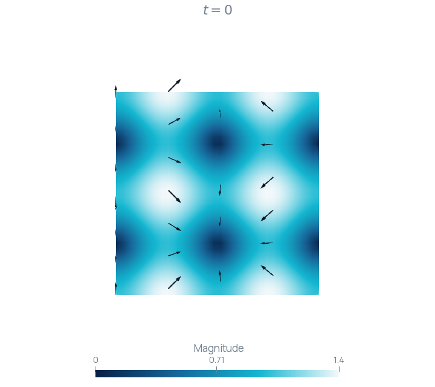
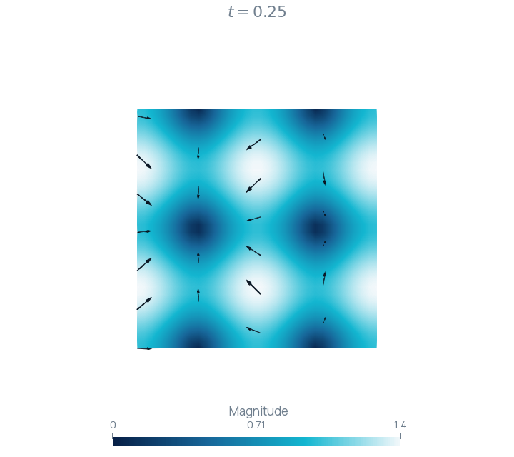

Exporting a time-dependent field
Write an analytic vector field and inspect its snapshots in ParaView.
Field and time sampling
On the unit square, consider the prescribed vector field
Its components vary periodically in space and time. This known field provides a direct check of time-series output because each exported nodal value can be compared with the formula at the recorded time.
Define the mesh and space
A grid with 32 vertices per direction gives 1,024 vertices and 1,922 triangles. The vector-valued space has two components. Forty intervals of length produce 41 snapshots, including and .
constexpr size_t nodes = 32; constexpr size_t steps = 40; constexpr Real dt = 0.05; Mesh mesh = Mesh().UniformGrid(Polytope::Type::Triangle, {nodes, nodes}); mesh.scale(1.0 / (nodes - 1)); P1 vh(mesh, 2); GridFunction u(vh);
Register the field
The writer observes the mesh and grid function. Both objects remain alive throughout the output loop. The explicit name u is the field name shown in ParaView.
IO::XDMF xdmf("TimeEvolution"); xdmf.grid().setMesh(mesh).add("u", u);
Interpolate and write each snapshot
Each assignment interpolates the analytic field at the current time. write(t).flush() records that state and updates the output files before the next iteration.
for (size_t k = 0; k <= steps; ++k) { const Real t = k * dt; u = [t](const Point& point) { return Math::Vector<Real>{{std::sin(2.0 * Math::Constants::pi() * (point.x() + t)), std::cos(2.0 * Math::Constants::pi() * (point.y() - t))}}; }; xdmf.write(t).flush(); }
Keep the output files together
TimeEvolution.xdmf describes the temporal collection and references the HDF5 mesh and field files. Copy the metadata and its referenced HDF5 files together when moving the result. The mesh is stored once under the default static-mesh policy; each time step adds field data.
Inspect the time series
- Open
TimeEvolution.xdmfin ParaView and select Apply. - Color by u, selecting Magnitude for the vector norm.
- Apply Glyph, select u as the orientation array and choose a sparse sampling so the arrows remain legible.
- Use the time controls to inspect the 41 states between zero and two.


The figures use a common magnitude scale from zero to . The two times reveal the change in vector direction as well as magnitude.
Build and run
Build the RodinIOXDMF target and run the executable in a scratch directory. The complete program is available in XDMF.cpp.